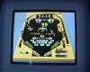
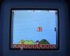
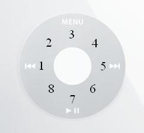
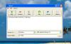

Nous allons voir dans ce chapitre uniquement l'installation de Rockbox. Nous allons utiliser un programme appelé ipodpatcher en utilisant la console de Windows (la console est un programme dans lequel on peut taper des lignes de code).
Avant toute installation, vous devez vous assurer que votre iPod figure parmi les suivants :
iPod 1 / 2 / 3G ;
iPod 4G noir et blanc ;
iPod 4G couleur (Photo) ;
iPod 5G (Video) ;
iPod Mini 1/2G ;
iPod Nano 1G.
Vous pouvez vérifier sur cette page quel iPod vous avez. Malheureusement, l'iPod Nano 2ème génération n'est pas compatible. Son nouveau processeur a été décrypté seulement récemment. Il faudra du temps pour que son port soit stable. Il en est de même pour les iPod de septembre 2007 (iPod Nano 3G, iPod Classic et iPod Touch). Les utilisateurs de ce modèle pourront regarder chaque jour s'il est compatible en allant sur la page des SVN Builds. Mais si vous êtes trop impatients, vous pouvez aller voir du côté de iPod Linux.
Il existe un utilitaire fait par l'équipe de Rockbox. Rockbox Utility vous permettra d'installer facilement ce programme en quelques clics. Vous pouvez le trouver à cette adresse. Après avoir téléchargé Rockbox Utility, décompressez-le et exécutez-le. A la première utilisation, une boîte de dialogue s'ouvrre pour identifier le modèle de votre baladeur et son emplacement. Faites-le manuellement ou via le bouton Autodetect. Si vous êtes anglophobes, vous pouvez changer la langue dans le menu File -> Configure -> Language. L'installation complète vous permet d'installer les composants nécessaires à l'exécution de Rockbox mais aussi les fichiers de Doom, les polices et éventuellement un ou plusieurs thème(s). L'installation minimale installe seulement les fichiers nécessaires au bon fonctionnement de Rockbox. Une fois l'installation terminée, vous pouvez fermer le programme et éjecter avant de le débrancher physiquement. Vous pouvez passer au deuxième chapitre pour apprendre à utiliser les plugins. De plus, lors de l'installation avancée, il ne vous sera pas nécessaire d'installer Rockdoom.
Bootloader
Pour installer le bootloader, nous allons utiliser un programme nommé ipodpatcher. Cliquez ici pour le télécharger. Ensuite, ouvrez-le après avoir connecté votre iPod. À l'entrée dans la console, on vous demande de taper une des trois lettres : i (install), u (uninstall) ou c (cancel). Tapez i.
Appuyez sur Entrée pour quitter. Vous pouvez maintenant déconnecter l'iPod en l'éjectant et le démarrer.
Oui, des lignes de code s'affichent, mais il ne se passe rien, Rockbox ne se lance pas !
C'est parce que vous n'avez pas encore installé le firmware, qui est le programme de Rockbox. Donc, laissez appuyés le bouton central et Menu quelques secondes pour que l'iPod redémarre ; enclenchez ensuite l'interrupteur Hold. L'iPod va démarrer avec la partition Apple, que vous aviez avant. Reconnectez l'appareil à l'ordinateur.
Firmware
Allez sur Rockbox.org et sélectionnez en haut du menu current build. Ensuite, choisissez le modèle de votre iPod en cliquant sur son image. Vous téléchargerez alors une archive nommée rockbox.zip. Avec WinZIP, WinRAR, ou n'importe quel logiciel d'archives, décompressez-la. Vous obtiendrez un dossier .rockbox contenant tous les jeux fournis avec Rockbox ainsi que le firmware. Copiez cet élèment dans l'iPod en allant avec le navigateur dans Poste de Travail et en cliquant sur sa lettre (Disque amovible ( F : ) ou IPOD ( Pierre ) si Pierre est votre nom).
Maintenant, éjectez l'iPod et regardez Rockbox se lancer. Le thème par défaut est Cabbie 2.0 Default :
Si ce thème ne vous plaît pas, ne vous inquiétez pas. Vous allez apprendre à mettre des thèmes dans le chapitre prochain.
Maintenant, vous devez installer les polices. Téléchargez cette archive, qui contient les polices au format .fnt. Copiez le dossier .rockbox dans l'iPod et cliquez sur Tous pour remplacer.
Pour changer la langue, allez dans Settings -> General Settings -> Language et choisissez-en une. Je suppose que vous allez prendre le français : je vais alors continuer le tutoriel avec le français.
Pour la désinstallation, vous pouvez soit restaurer l'iPod avec iTunes, soit faire de la manière suivante, qui vous permettra de conserver vos données. Lancez ipodpatcher et au lieu de taper i, tapez u. Le bootloader de Rockbox sera retiré. Ensuite, si vous n'avez plus beaucoup de place sur l'iPod, vous pouvez supprimer le dossier .rockbox.
Ça y est, Rockbox est installé ! Comme je suppose que vous ne l'avez pas encore désinstallé de votre iPod, je vous suggère de vous rendre au plus vite au chapitre 2 où vous pourrez changer l'apparence du menu.
Si vous suivez cette démarche, vous pourrez choisir un autre thème pour votre iPod.
Télécharger les thèmes
Allez sur rockbox-themes.org et choisissez votre modèle. Il n'y a pas de thèmes supplémentaires pour l'iPod 3G. Vous arriverez sur une page où sont présentés tous les thèmes proposés pour votre iPod. Pour en télécharger un, cliquez sur le lien de téléchargement correspondant.
Choisir un thème
Les thèmes sont sous la forme d'une archive. Il faut extraire cette archive. Elle contient :
soit un dossier .rockbox, que vous pouvez copier dans le dossier racine de l'iPod ;
soit des dossiers nommés backdrops, themes, wps... que vous pouvez copier dans le dossier .rockbox de l'iPod ;
soit un dossier du nom du thème : ce dossier doit contenir les dossiers du 1 ou du 2.
Déconnectez l'iPod et lancez Rockbox. En allant dans Réglages et en sélectionnant Liste des thèmes, vous aurez la liste des thèmes que vous avez installés et ceux de Rockbox. Si vous choisissez un autre thème, la police, l'arrière-plan et d'autres choses changeront.
Les plugins (modules d'extension en français) sont tous les programmes à l'extension .rock de Rockbox. Certains sont dans le dossier /.rockbox/rocks/. Ils sont disponibles en sélectionnant Liste des Modules d'Extension dans le menu de Rockbox. Il sont classés aussi par catégorie :
Plugin
Catégorie
Description
xobox
Jeu
Application dont le but est de diviser un rectangle contenant des balles sans toucher ces balles
wormlet
Jeu
Petit jeu de "simulation"
vu_meter
Démo
Copie de oscilloscope, mais avec des "compteurs"
text_editor
Utilitaire
Programme qui ouvre les fichiers et peut les modifier
superdom
Jeu
Jeu de stratégie par tours
sudoku
Jeu
Sudoku
stopwatch
Utilitaire
Chronomètre
stats
Utilitaire
Programme qui montre le nombre de dossiers, de fichiers...
starfield
Démo
Copie de l'écran de veille "Etoiles" de Windows
star
Jeu
Jeu de logique où il faut attraper toutes les étoiles (bugge sur l'iPod Nano)
spacerocks
Jeu
Asteroïds
solitaire
Jeu
Solitaire, meilleur que celui d'Apple
sokoban
Jeu
Casse-tête qui consiste à faire bouger les pierres sur certaines cases
snow
Démo
Écran de veille de neige
snake2
Jeu
Snake 2 (nettement meilleur)
snake
Jeu
Snake
sliding_puzzle
Jeu
Puzzle dans lequel on peut bouger les pièces
rockpaint
Utilitaire
Programme de dessin (comme Paint et seulement sur les écrans en couleur)
rocklife
Démo
Écran de veille avec des particules
rockblox
Jeu
Copie de Tetris
robotfindskitten
Jeu
Test où vous devez trouver un chat parmi des objets
random_folder_advance_config
Utilitaire
Programme qui permet de configurer la liste de lecture aléatoire
pong
Jeu
Jeu de Pong à deux joueurs
plasma
Démo
Ecran de veille avec zoom
pictureflow
Démo
Programme faisant défiler les pochettes d'album à l'aide de la base de données de musiques (seulement sur les écrans couleur)
pacbox
Jeu
Copie de Pacman (seulement sur les écrans en couleur et nécessite d'être installé)
oscilloscope
Démo
Graphique qui se trace sur le son joué
mosaique
Démo
Ecran de veille
minesweeper
Jeu
Copie de Démineur
metronome
Utilitaire
Métronome
maze
Jeu
Labyrinthe
matrix
Démo
Écran de veille à la Matrix
mandelbrot
Démo
Figure fractale
logo
Démo
Logo qui rebondit mais sans horloge
jewels
Jeu
Copie de Bejeweled dont le but est de former des triples de mêmes diamants
jackpot
Jeu
Machine à sous classique de casino
grayscale
Utilitaire
Programme qui montre les possibilités du noir et blanc (seulement sur les écrans en noir et blanc)
flipit
Jeu
Casse-tête dont le but est de retourner tous les jetons sur leur face bleue
fire
Démo
Écran de veille avec du feu
doom
Jeu
Célèbre jeu de Doom (nécessite d'être installé)
disktidy
Utilitaire
Programme qui supprime les fichiers laissés par Windows ou Mac sur l'iPod comme Thumbs.db
dict
Utilitaire
Dictionnaire (nécessite d'être installé)
dice
Utilitaire
Programme de lancers de dés
demystify
Démo
Copie d'un écran de veille de Windows, "Ballet de lignes"
cube
Démo
Cube en 3D qui peut tourner plus ou moins vite grâce à la molette
credits
Démo
Logo de Rockbox suivi des noms de l'équipe de Rockbox
clock
Utilitaire
Horloge
chopper
Jeu
Petit jeu où vous ne devez pas toucher les bords avec l'hélicoptère
chessclock
Utilitaire
Programme pour chronométrer les tours aux échecs
chessbox
Jeu
Echecs
calculator
Utilitaire
Calculette avec les fonctions de base
bubbles
Jeu
Le plus apprécié des nouveaux utilisateurs de Rockbox : jeu où l'on doit lancer des billes pour faire exploser les autres
brickmania
Jeu
Copie de Breakout (casse-brique) avec des bonus
bounce
Démo
Écran de veille avec le logo de Rockbox qui rebondit et, en arrière-plan, une horloge
blackjack
Jeu
Jeu de Blackjack
battery_bench
Utilitaire
Programme qui permet, après avoir fait des tests, de faire des graphiques pour la batterie
Certains autres plugins se lancent automatiquement quand certains fichiers sont ouverts. Les voici :
Plugin
Description
Extension
zxbox
Emulateur de jeux ZX Spectrum 48k
tzx / z80 / tap / sna
viewer
Ouvre les fichiers texte sans les modifier
txt
vbrfix
Fixe le header VBR
mp3
sort
Range dans l'ordre alphabétique les fichiers texte ou les listes de lecture
txt / m3u / m3u8
search
Recherche dans les listes de lecture
m3u / m3u8
rockboy
Émulateur de jeux de Gameboy ou de Gameboy Color (seulement sur les écrans en couleur)
gb / gbc
mpegplayer
Ouvre les vidéos MPEG (seulement sur les écrans en couleur)
mpg
midiplay
Ouvre les musiques MIDI
mid / midi
jpeg
Ouvre les images JPEG
jpg
chip8
Émulateur de jeux Chip8
ch8
Ces plugins sont dans le dossier /.rockbox/viewers/. Certains plugins du premier tableau peuvent être lancés aussi à l'ouverture d'un fichier comme text_editor.
Vous pouvez modifier le disque, comme copier, coller ou renommer en appuyant longuement sur le bouton central après avoir sélectionné le fichier ou le dossier. Voici les options disponibles :
Liste de Lecture : permet d'ajouter une musique ou un dossier contenant des musiques à la liste de lecture courante ;
Catalogue de Listes de Lecture : permet de voir les listes de lecture courantes ou d'en créer de nouvelles ;
Renommer : permet de renommer le fichier / dossier à l'aide d'un clavier virtuel ;
Couper : place le fichier dans le presse-papier et le supprimera lors du collage ;
Copier : place le fichier dans le presse-papier ;
Coller : copie le fichier qui se trouve dans le presse-papier dans le répertoire sélectionné ;
Ouvrir avec. . . : ouvre le fichier avec un des plugins ;
Créer un Répertoire : crée un dossier avec le nom désiré ;
Propriétés : ouvre un programme vous donnant des informations sur le fichier ;
Choisir comme dossier d'enreg. : sélectionne le dossier pour que les enregistrements y soient copiés ;
Ajouter aux raccourcis : crée un un fichier pour les raccourcis à la racine de l'iPod, et ajoute le fichier.
On peut donc modifier le disque pratiquement comme sur l'ordinateur.
La musique
Comme Rockbox possède un naviguateur, il faut mettre les musiques dans un dossier de l'iPod et les sélectionner pour pouvoir les écouter. Cela permet de se débarrasser d'iTunes. Mais si vous ne pouvez pas les mettre et que vous voulez garder vos musiques de iTunes, vous devez enclencher la base de données. Pour cela, laissez appuyé le bouton central en sélectionnant Base de données Tags ou allez dans Réglages -> Réglages Généraux -> Base de données Tags. Sélectionnez ensuite Initialiser le Cache, attendez ensuite que l'iPod ne travaille plus (dans ce cas, la clé à molette en haut à droite disparaît) ; redémarrez l'iPod en appuyant pendant cinq secondes sur Lecture et en appuyant ensuite sur Menu ou sur le bouton central. Chaque fois que vous rajouterez des musiques, il faudra aller dans le même menu que tout à l'heure et choisir Mise à jour immédiate. Si vous avez enlevé des musiques, il faut sélectionner Initialiser le Cache et redémarrer l'iPod, sinon la musique sera présente dans la base de données. Quand il sera prêt, cliquez sur Base de données Tags dans le menu. Vous pourrez ensuite choisir vos morceaux préférés dans le navigateur.
Vous pouvez aussi démarrer l'iPod sur sa partition Apple et vous pourrez écouter les musiques que vous avez mises dans l'iPod avant d'installer Rockbox.
Quand vous sélectionnerez une musique ou quand vous choisirez Continuer la lecture, la fenêtre de lecture apparaîtra. Pour retourner dans le navigateur sans que la musique ne s'arrête, appuyez sur le bouton central et pour stopper la musique, appuyez longuement sur Lecture.
Gestion des configurations
Dans Réglages -> Gestion des configurations, vous pouvez sauvegarder toutes vos options dans un fichier .cfg. Pour cela, cliquez sur Sauver le fichier .cfg. Vous pourrez plus tard le charger et sélectionnant Charger un fichier .cfg. Et vous pouvez aussi sauver les options et réglages d'un thème en cliquant sur Save theme settings. Vous pouvez par exemple faire une configuration pour chaque thème préféré.
Vous avez appris la plupart des astuces de Rockbox. Maintenant, vous pouvez vous rendre au troisième chapitre pour installer encore d'autres jeux.
Rockdoom vous permet de jouer à Doom, le célèbre tout premier FPS. Pour cela, téléchargez cette archive et décompressez-la dans votre iPod. Elle contient un dossier ".rockbox", qui lui-même contient un dossier "doom", dans lequel sont les wads indispensables pour jouer à Doom. Ces wads sont :
rockdoom.wad : LE fichier indispensable, ce wad permet de jouer aux autres wads
doomf.wad : Un wad qui n'est pas indispensable, mais que vous feriez mieux d'avoir. C'est une version gratuite de Doom 2 : Freedoom.
Après avoir extrait l'archive, vous pouvez télécharger la démo de Doom ici. Il y a trois épisodes mais vous ne pourrez jouer qu'au premier. Allez ensuite dans "Liste des Modules d'Extension" et sélectionnez "doom". Après l'affichage de lignes de code, vous arriverez dans un menu où vous pouvez choisir votre jeu dans "Game", votre addon (wad non-officiel) dans "Addon" et votre démo (replay montrant les actes d'un utilisateur) dans "Demo". Vous pouvez aussi régler les options et quitter. Après avoir choisi votre jeu, sélectionnez "Play Game". Des lignes de code s'afficheront une fois de plus et vous arriverez dans le menu du jeu. Vous pouvez télécharger des addons comme Counter Strike ou Twilight Warrior et y jouer en les copiant dans un dossier "/.rockbox/doom/Addons/". Vous devrez sélectionner un jeu à un épisode comme Freedoom pour que l'addon marche.
Pacbox est un émulateur MAME qui vous permet de jouer à Pacman : L'écran des iPods est tourné de 90° dans le sens des aiguilles d'une montre. Pour installer Pacbox, vous devez télécharger cette archive. Vous devez extraire ces archive dans le répertoire "/.rockbox/pacman/" de votre iPod. Maintenant, déconnectez l'iPod, lancez pacbox dans la liste des plugins et amusez-vous bien.
Dict
Le plugin Dict est un dictionnaire. Selon les fichiers dict.desc et dict.index que vous mettez sur l'iPod, vous aurez un dictionnaire de différentes langues. Je vais juste vous donner les fichiers du dictionnaire en anglais car je n'ai pas encore trouvé les fichiers français : http://www.rockbox.dreamhosters.com/dict.zip
Décompressez cette archive dans le dossier .rockbox de l'iPod. Vous pouvez maintenant chercher n'importe quel mot anglais et connaître sa signification.
Chip8 est un émulateur de jeux chip8 (.ch8). Voici une photo de Space Invaders. Ces jeux sont très mal faits et l'émulateur ne prend pas en compte certaines touches. Cette partie est donc purement facultative. Téléchargez cette archive pour avoir tous les jeux de chip8. Ne copiez que les fichiers .ch8 et .c8k dans votre iPod. Copiez-les dans un dossier Jeux ou Chip8. Quand vous lancerez Rockbox, en sélectionnant "Fichiers" et en les lançant dans le navigateur, vous pourrez jouer à ces jeux. Pour quitter Chip8, appuyez sur "Menu".
ZXBox
ZXBox est un émulateur de jeux ZX Spectrum 48k. Voici une photo de Pinball Power. Vous pouvez trouver ces jeux ici. Les jeux sont classés par ordre alphabétique. Ils sont au format .tzx et les screenshots de ZXBox sont au format .z80. Pour entrer dans le menu de ZXBox, activez, puis désactivez "Hold". Dans le menu, vous pouvez entrer une touche du clavier ZX Spectrum, prendre une screenshot... Dans "Options", vous pouvez changer les touches par défaut de "Menu", "Suivant", "Précédant", "Lecture" et du bouton central.
Rockboy
Rockboy est un émulateur de jeux de Gameboy et de Gameboy Color (.gb/.gbc). Voici une photo de Super Mario Bros. Ces jeux sont tous payant sauf certains qu'on appelle jeux PD ( :colere2: ne vous moquez pas, ça veut dire Pure Data). Ils sont disponibles sur http://www.pdroms.de. Le menu est accédé avec "Hold" aussi. Dedans, vous pouvez sauver/charger une des cinq parties, vérifier les options ou quitter. Je vous conseille de ne pas changer les options. La molette des iPods est tactile, c'est-à-dire que quand on touche une zone, un bouton de la Gameboy est appuyé :

Flèche Gauche
B
Flèche Haut
A
Flèche Droite
Start
Flèche Bas
Select
La touche "Menu" est par défaut "B", "Lecture" est par défaut "Start" et le bouton central est par défaut "A". Ces touches peuvent être réglées dans les options. Les flèches gauche et droite sont réglées sur "B" et on ne peut pas le changer.
Pour mettre des vidéos sur l'iPod, je vais vous montrer deux programmes différents. WinFF est peut-être plus simple mais il faut choisir le format de l'image tandis qu'avec MediaCoder, toutes les extensions ne sont pas supportées.
MediaCoder
Vous devez les encoder à la résolution de l'appareil. Nous allons donc télécharger un logiciel nommé MediaCoder ici. Dans MediaCoder Full Edition, cliquez sur la dernière version (15 Mo).
Après l'avoir installé, téléchargez ce fichier zip. Décompressez-le dans le dossier d'installation de MediaCoder (par défaut "C:\Program Files\MediaCoder") dans le dossier "extensions".
Lancez MediaCoder. Une page web va se lancer. Vous devez cocher "Do not show this page on next startup" pour que la page web n'apparaisse plus. Ensuite, cliquez sur "Start MediaCoder". Dans le menu, sélectionnez "Add.." et choisissez vos fichiers vidéo. Vous devez ensuite choisir le format de l'image. Allez dans les extensions en cliquant sur le bouton "Extension" en haut.
Cliquez sur "Rockbox jukebox" en dessous de "Digital Media Player". Dans la fenêtre qui s'ouvre, choisissez le modèle de votre iPod et à côté de "Cropping", sélectionnez "Expand to fitt screen". Ensuite, cliquez sur "Start".
Une copie de la vidéo au format .mpg et à la résolution changée apparaîtra dans le même dossier que l'autre. Vous pouvez copier cette vidéo sur l'iPod.
WinFF
Téléchargez WinFF sur le site officiel. Là aussi, choisissez la dernière version. Ensuite, lancez WinFF, ajoutez vos fichiers avec "Add" et choisissez dans la liste de gauche "Rockbox" et dans la liste de droite le modèle de l'iPod ainsi que le format de la vidéo : 16:9 ou 4:3. Ce point est important car si vous vous trompez, la vidéo sera étirée.  Choisissez aussi la destination de votre vidéo.
Après ces réglages, cliquez sur "Convert". Une console apparaîtra et la conversion commencera.
Vous devez maintenant avoir un iPod sur lequel vous pouvez beaucoup vous distraire. Rendez-vous au chapitre suivant pour construire votre propre version de Rockbox.
CygWin est un programme qui simule la console d'Unix. Il est indispensable à la compilation. Téléchargez ce fichier qui va vous permettre d'installer CygWin : setup.exe. Mettez cet exécutable dans un dossier vide car durant l'installation, des fichiers seront téléchargés et mis dans ce dossier.
Lancez l'installation. Cliquez sur Suivant et sélectionnez Install from Internet (choix par défaut). Cliquez sur Suivant et sélectionnez le dossier d'installation de CygWin. Je vous conseille de laisser C:\cygwin. Cliquez sur Suivant deux fois et choisissez votre type de connexion. Si vous ne savez pas, laissez le choix par défaut. Cliquez sur Suivant et après que la liste des miroirs ait été téléchargée, sélectionnez le premier. Quand vous cliquerez sur Suivant, la liste des applications qui peuvent être installées va être téléchargée et affichée :
Laissez toutes les catégories à Default sauf Base que vous mettrez à Install en cliquant dessus. Vous devez aussi sélectionner ces applications :
Archive → zip
Archive → unzip
Devel → binutils
Devel → gcc
Devel → gcc-mingw-core
Devel → gdb
Devel → make
Devel → mingw-runtime
Devel → patchutils
Devel → subversion
Editors → nano (pour n'importe quel modèle)
Interpreters → perl
Cliquez ensuite sur Suivant. Les bases de CygWin vont être installées. Ensuite, setup.exe va vous demander si vous voulez mettre des raccourcis : à vous de voir. Quand l'installation est finie, relancez-la.
Comment ? Mais je viens de la finir !
Oui, mais devez aussi installer le compilateur. Suivez la même démarche que tout à l'heure sauf qu'au choix des miroirs, tapez http://download.rockbox.org/cygwin/ dans la boîte de texte en dessous de la liste http://download.rockbox.org/cygwin/, cliquez sur Add et sur le miroir que vous venez d'ajouter, dans la liste :
Ensuite, dans le choix des applications, choisissez :
Devel → sdl
Devel → arm-elf-gcc
Devel → arm-elf-binutils
Ensuite, lancez l'installation. Après l'installation, on vous redemandera si vous voulez mettre des raccourcis : à vous de voir encore.
Il reste encore à mettre le chemin du compilateur dans CygWin. Pour cela, allez dans le dossier etc du répertoire d'installation et ouvrez le fichier profile avec un éditeur de texte comme le Bloc-notes. Au début, remplacez cette ligne :
De cette façon, vous n'aurez pas à écrire ce chemin chaque fois que vous souhaitez utiliser le compilateur. Vous pouvez à présent enregistrer le fichier, puis quitter votre programme en toute sécurité.
Maintenant que vous avez installé CygWin, vous pouvez télécharger le code source. Allez sur la page des SVN Builds ou des Daily Builds et cliquez sur le lien de téléchargement. L'archive fait à peu près 8 Mo. Extrayez l'archive dans le disque dur. Un dossier du même nom que l'archive contenant le code source de Rockbox apparaîtra. Renommez ce dossier rbsource. Votre code source devrait donc être dans le dossier C: bsource. À l'intérieur de ce dossier, créez un autre dossier build, qui servira pour la compilation.
Allez sur les patches de Rockbox. Si un patch vous tente, vous pouvez le télécharger. Le patch est souvent sous la forme d'un fichier .patch ou .diff. Dans certains cas, il y a un patch + du code C. A ce moment, copiez le code dans le répertoire "C: bsource". Copiez le fichier .patch ou .diff dans le dossier rbsource aussi. Vous aurez besoin de patch.exe, un utilitaire qui applique les patches. Allez dans le répertoire d'installation de CygWin et dans le dossier "bin", copiez "patch.exe". Collez le dans rbsource. Ensuite, lancez CygWin en cliquant sur le raccourci ou sur cygwin.bat dans le dossier de CygWin. La console va se lancer, avec CygWin. Tapez :
cd C:/rbsource
avec un / et non un \ car CygWin simule Unix. Ensuite, tapez :
patch --binary -p0 < [nom du patch]
où [nom du patch] est le nom du patch (sans blague :lol: ). Ex :
patch --binary -p0 < chopper.patch
Ici, mon patch s'appelle "chopper.patch". Essayez de remplacer 0 par 1 et ainsi de suite jusqu'à 5 si ça ne marche pas. Vous pouvez appliquer autant des patches que vous voulez.
Vous pouvez aussi changer le code manuellement si vous avez des connaissances en langage C. Si vous voulez apprendre le C, allez sur le tuto de M@teo21.
Après avoir changé le code comme vous le souhaitez, dans CygWin, tapez :
cd build
CygWin va naviguer dans le dossier build que vous avez créé tout à l'heure. Pour configurer votre version Rockbox, tapez :
../tools/configure
L'outils configure va vous demander quel iPod vous avez. Tapez le numéro correspondant à votre modèle. Pour l'iPod Nano, par exemple, c'est 21. Puis, appuyez sur Entrée. Appuyez encore sur Entrée pour choisir la version normale de Rockbox. Ensuite, pour lancer la compilation, tapez :
make
Elle prendra environ cinq minutes mais peut être davantage sur un ordinateur lent. Quand vous verrez que vous pouvez entrer une commande, tapez :
make zip
Cette ligne va créer une archive rockbox.zip dans le dossier build que vous pouvez décompresser dans l'iPod.
Vous avez maintenant compilé votre propre Rockbox, mais allez plus loin ! Vous pouvez changer à l'infini le code source. Peut-être fabriquerez-vous une fonctionnalité géniale : vous pouvez proposer vos patches sur le site de Rockbox.
Et voilà, c'est fini ! Faites passer le virus de Rockbox et ne le désinstallez pas trop tôt ! Si vous avez un quelconque problème, envoyez-moi un MP et je pourrais probablement vous répondre.
{kind=link}
{kind=link}
{kind=link}
{kind=link}
{kind=link}
{kind=link}
{kind=link}
{kind=link}
{kind=link}
{kind=link}